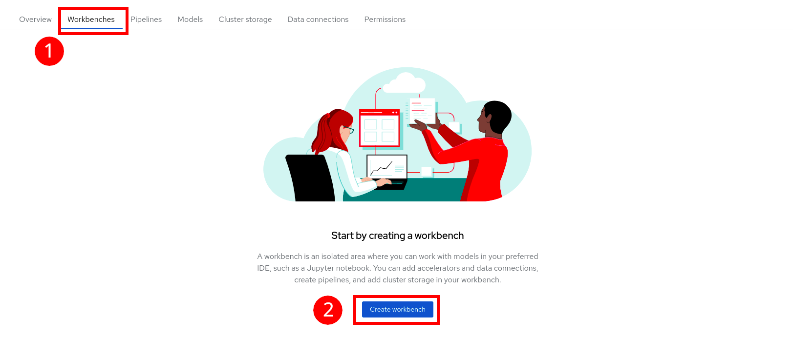
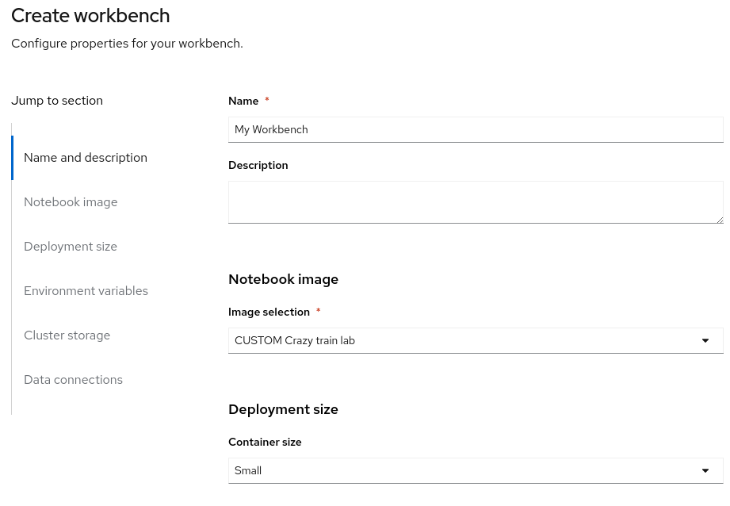
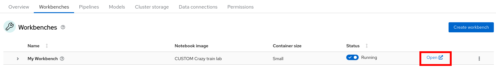

Creating a workbench
Launch a Workbench
-
Once the Data Connection and Pipeline Server are fully created
-
Create a workbench 
-
Make sure it has the following characteristics:
- Choose a name for it, like:
My Workbench - Image Selection:
CUSTOM Crazy train lab - Container Size:
Small - Keep the default cluster storage settings
- On the bottom, tick “Use a data connection”
- Scroll down to “Use existing data connection”
- Select from the list the “pipelines” data connection you previously created.
- That should look like:


- Choose a name for it, like:
-
Create the workbench and wait for your workbench status to be “Running”
-
Once it is, click the Open Link to connect to it. 
-
Authenticate with the same credentials as earlier
-
You will be asked to accept the following settings:

-
Do so
-
You should now see this:

Git-Clone the lab repo
We will clone the content of our Git repo so that you can access all the materials that were created as part of our prototyping exercise.
- Using the Git UI:
- Open the Git UI in Jupyter:

- Open the Git UI in Jupyter:
- Enter the URL of the Git repo:
https://github.com/Demo-AI-Edge-Crazy-Train/workshop-model-training. Select also “Download the repository”.
At this point, your project is ready for the work we want to do in it.